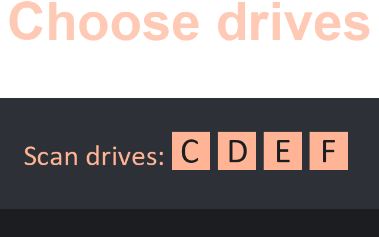
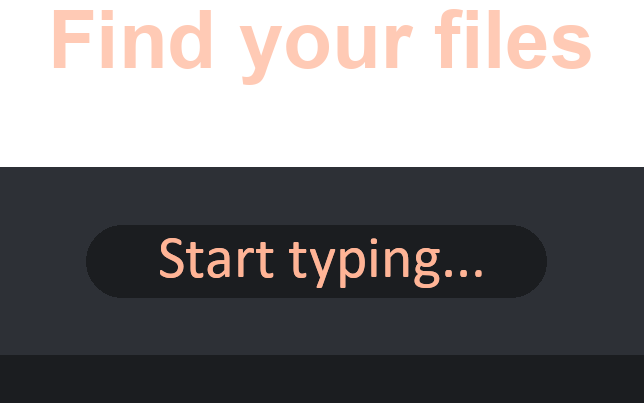

Da Deep Search
Download
Donate
Feedback
SRC
Overview
Da Deep Search is a minimal, high-performance file exploration tool made for fast file discovery on your Windows PC. With blazing search speeds, it approaches tools like Everything in some cases, with the added bonus of wide file system compatibility and more! It's designed to feel like a native part of the operating system.
Stand out Features:
✅ Portable software
✅ Wide file system compatibility
✅ Ultra fast / Threaded file search
✅ Local file transfer
✅ Option to use with no administrator privileges
✅ Smooth integration to the Windows OP
✅ Automatic updates
✅ Smart file search
➕ More interesting features to come
📖 How to
⬇️ Download
🍵 Donate
About Da Deep Search
Easy
Da Deep Search is super easy to use. Run the .exe file and press LCtrl + Space to bring it up!
Fast
Da Deep Search is a threaded application, made in C++20 that constantly receives optimization updates!
Cross-platform
Da Deep Search reads files reliably across a wide variety of file system formats like NTFS and FAT32!
Open-Source
Da Deep Search version 2.1_2 source code and below, is available to everyone to modify!
How to use Da Deep Search
Press LCtrl + Space to open / close the window.

Select the drives you want to scan, in the left corner.

Type the name of the file you want to find instantly.